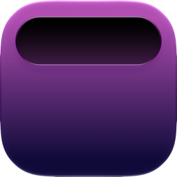

A living island for your Mac — music, calendar, weather, timers, and more, right at the notch.
Download for macOSApple Silicon · macOS 13 Ventura or later · free · auto-updates
Lyria grows out of the notch and quietly hosts the things you reach for most.
Mirror and control Apple Music from the notch, with an album-art glow that pulses to the beat.
Press ⌥Tab to fan out every open window across your Mac and jump straight to one.
Your next event sits at the notch with a live countdown before it starts.
Countdowns and a stopwatch, plus the local weather for wherever you are.
Set the volume and tune a full EQ for individual apps, independent of the system mix.
A cleaner overlay that replaces the system one — and drives external monitors over DDC.
Lyria is in open beta. It's free and not yet notarized by Apple, so the first launch takes one extra click.
Download the latest release and open the disk image.
Drag Lyria into your Applications folder.
Right-click Lyria → Open, then click Open in the dialog. macOS only asks this once, because the beta isn't notarized yet.
A short welcome tour walks you through granting the permissions each feature needs. You stay in control — skip anything you don't want.
Lyria has no account, no sign-in, no analytics, and no servers of its own. Everything it shows — what's playing, your next event, notifications, the local weather — is read and rendered entirely on your device and is never sent anywhere.
Lyria is open source — you can read exactly what it does at github.com/gcrft123/lyria.